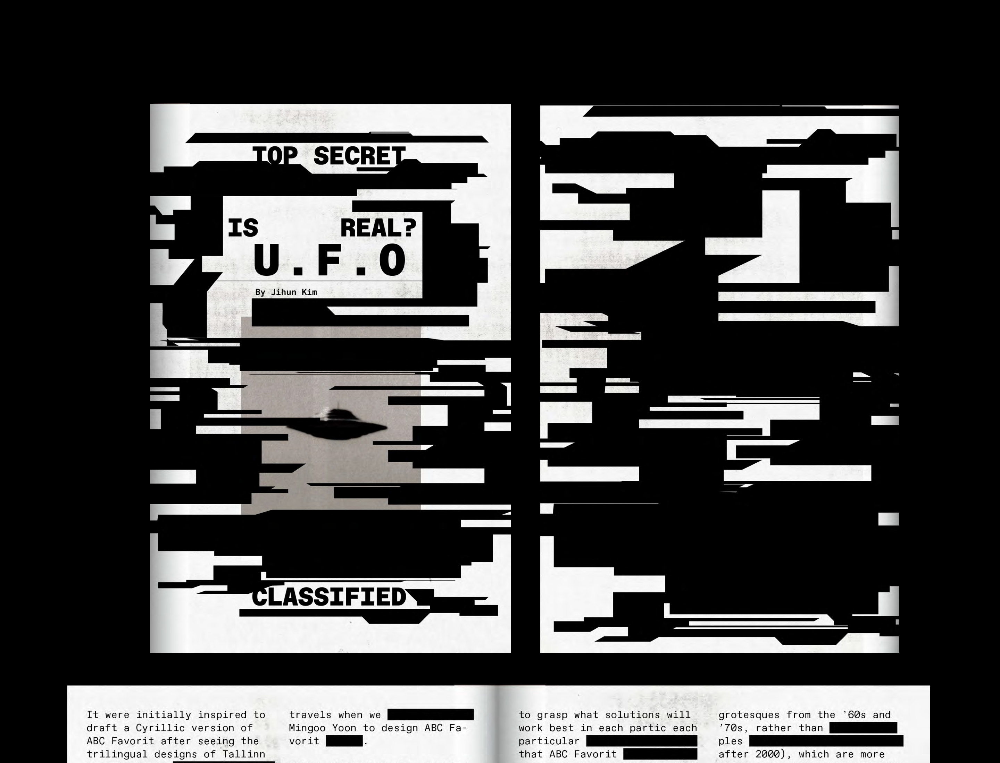
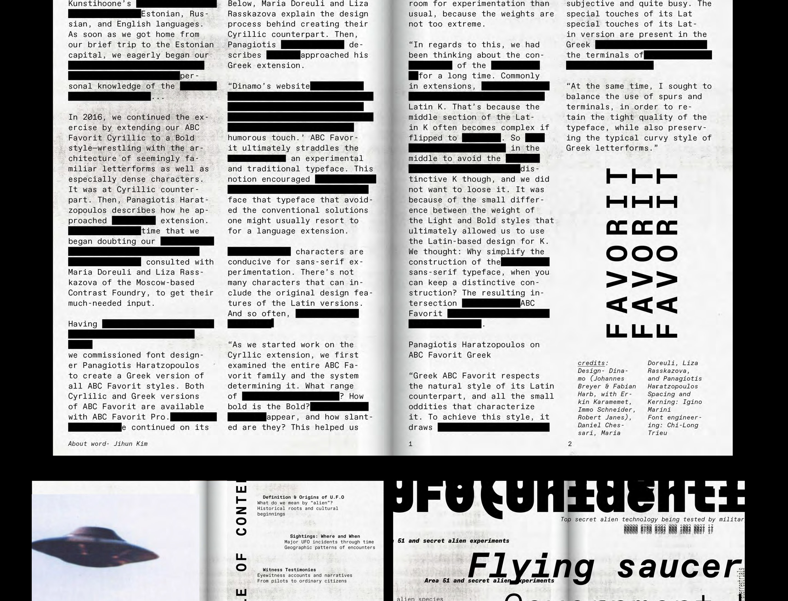
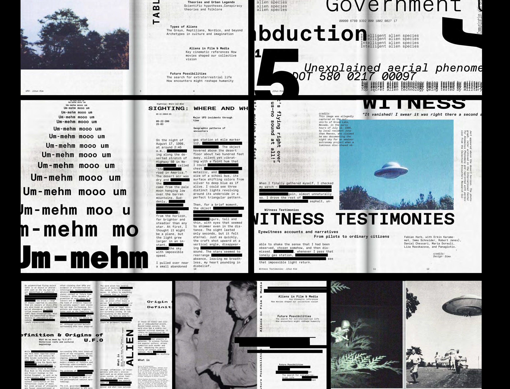
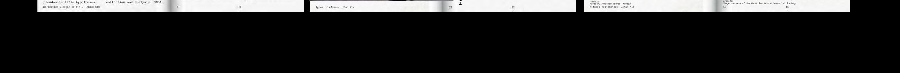

Created a type specimen booklet based on the typeface “ADC Favourit.” The font’s irregular and unconventional forms reminded of UFO imagery and classified documents, designed the booklet inspired by confidential UFO files and censorship marks.



